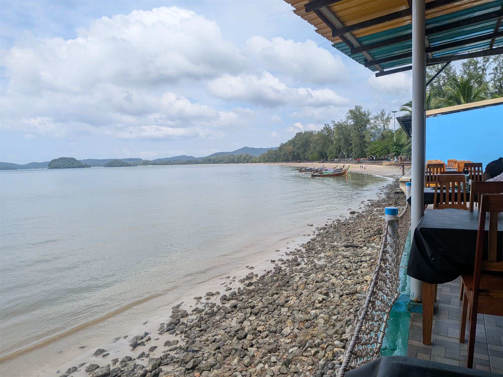

Пляж
Нопарат Тара — длинный спокойный пляж на западном краю Ао Нанга. На песке ждут длиннохвостые лодки, а на горизонте видны известняковые острова.
Мы находимся в той части Ао Нанга (Ao Nang), что ближе к Нопарат Тара (Noppharat Thara): это более спокойный участок пляжа, откуда длиннохвостые лодки ходят на острова, а ночной рынок Landmark совсем рядом.
เดอะ บีช บ็อกซ์пляж Нопарат Тара, Ао Нанг, Краби

| Место | Пешком |
|---|---|
| Пляж Нопарат Тара | около 30 шагов |
| Starbucks, Ao Nang Landmark | 180 м · 3 мин |
| 7-Eleven (круглосуточно) | 230 м · 3 мин |
| KFC, Ao Nang Landmark | 240 м · 3 мин |
| Ночной рынок Ao Nang Landmark | 300 м · 4 мин |
| Паромный причал, центр Ао Нанга, аэропорт Краби | добавим |



Нопарат Тара — длинный спокойный пляж на западном краю Ао Нанга. На песке ждут длиннохвостые лодки, а на горизонте видны известняковые острова.
До ночного рынка «Ао Нанг Лэндмарк» (Ao Nang Landmark Night Market) четыре минуты пешком: уличная еда, напитки и торговые ряды каждый вечер.
Круглосуточный 7-Eleven, Starbucks и KFC находятся в трёх минутах ходьбы.